Input
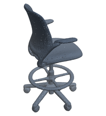
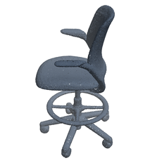
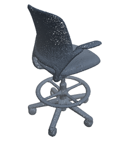
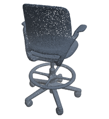
4 images + cameras
PhysDec
An agentic pipeline for physically grounded shape decomposition from a few images.
From images to simulation
Compared with geometry-focused methods, PhysDec produces physically plausible decompositions whose parts remain connected and stable in simulation.
01 / Abstract
Shape decomposition represents 3D objects as a compact set of geometric primitives for interpretable modeling and simulation. However, existing decomposition methods are trained primarily for geometric fidelity, without explicit constraints on physical plausibility, and can therefore produce disconnected parts or physically unstable reconstructions. We present PhysDec, an agentic pipeline that draws on a pretrained vision-language model's semantic understanding and commonsense reasoning to predict material-aware primitive decompositions from a few images. PhysDec-Loop reasons about part structure and materials, using a reference 3D point cloud for geometric feedback and physical verifiers to guide iterative refinement. Through self-evolution, we develop PhysDec-Evolved, which learns from prior corrections to predict primitive decompositions from images alone, without reference geometry or a correction loop at inference. Experiments show that PhysDec-Loop improves geometric fidelity, physical plausibility and visual quality over geometry-focused baselines, while PhysDec-Evolved approaches its performance at substantially lower inference cost.
A three-minute narrated overview of the paper; captions are in the player.
02 / Method
Given one to four images, PhysDec predicts a compact set of primitives, each with geometry, pose and material attributes.
Decompose
Our primitive vocabulary includes superellipsoids, toroids and hyperboloids, with tapering, bending, swept tubes and radial arrays.
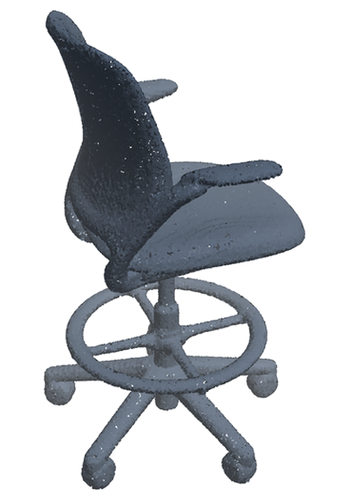
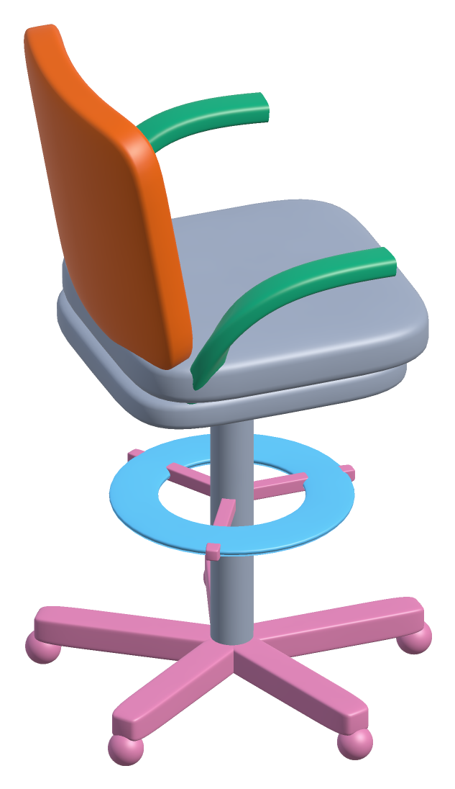
An office-chair decomposition, colored by primitive type.
Each part has a material and a solid, tubular or thin-shell construction. Together, these determine its effective density and simulation mass.
Density in kg/m³: solid / tube / shell. A dash indicates an unavailable construction.
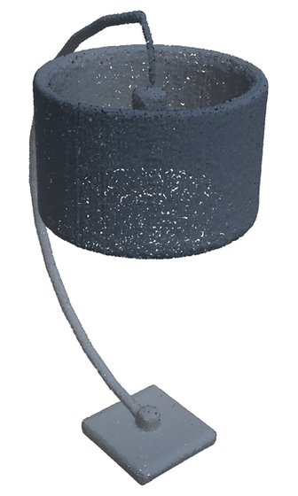
Physics
The predicted parts must remain connected and satisfy checks for their support type: standing stability, wall contact or suspended balance.
Green and red mark passing and failing examples. Wall contact is checked geometrically; the perturbed failure is shown with hinge motion for illustration.
Verify
The VLM analyzes images of the object and proposes a material-aware primitive decomposition. Geometric and physical verifiers, together with a VLM reviewer, assess the proposal. Critique turns these outputs into feedback, which Propose uses to generate the next decomposition. The highest-scoring decomposition that passes the physical checks is selected. Blue marks VLM reasoning; orange marks verification with tools and VLM review.




4 images + cameras
drafting chair free-standing
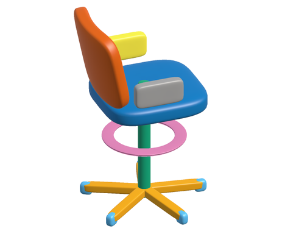
round 0
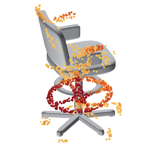
✗ 2 pieces
62 / 100
“Most important is the floating foot ring. The physics image shows it red, about 0.12 from anything, and it fell down the column.”
next round, up to 3
Evolve
On training objects, corrections from PhysDec-Loop provide successful examples, reusable insights and material priors for the retrieval library, and guide prompt evolution with GEPA. For a new object, PhysDec-Evolved analyzes the images, retrieves relevant experience and predicts a decomposition using the evolved prompts in two VLM calls, without an online correction loop.
Learn from training objects Reference geometry available
A correction pair: the score rose.
exemplars: corrected results
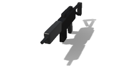
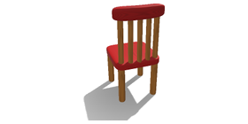
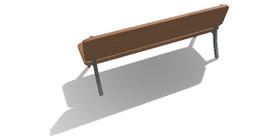
insights when a magazine hangs below the body, do size it as measured …
priors materials by part
Keep the better prompt, and repeat.
Predict a new object Images only · Two VLM calls
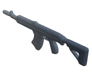
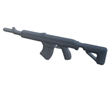
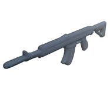
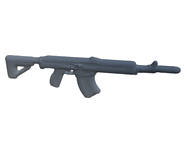
rifle handheld
+ 8 more
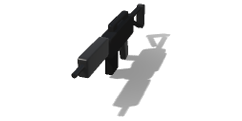
The nearest exemplar, with its insights and priors.
No render, no simulation, no critique.
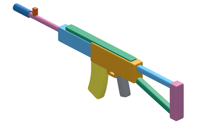
two model calls
03 / Evaluation
We compare with SQ, EMS, Marching-Primitives, SuperDec and SuperFlex on geometric fidelity, physical plausibility and visual quality.
| Method | CD-L1 ↓ | #Prim. | Phys. pass (%) ↑ | VLM ↑ Sonnet 5.5 | VLM ↑ GPT-6.1 Sol |
|---|
585 test objects across 13 categories. PhysDec receives four images; baselines receive ground-truth point clouds. PhysDec-Loop also uses the reference point cloud for verifier feedback.
PhysDec-Loop achieves the lowest Chamfer distance and the highest physical-check pass rate and visual scores. Most baseline failures involve disconnected parts, despite plausible surface fits.
† Receives an SDF of the reference shape instead of a point cloud. Two judges grade the same renders.
Primitive decompositions from the baselines, PhysDec-Evolved and PhysDec-Loop.
A different set of ShapeNet objects simulated for 4 s. Marks indicate physical-check outcomes.
Unstable playback may remove ejected parts or freeze at the last valid frame.
| Calls | CD-L1 ↓ | #Prim. | Phys. pass (%) ↑ | VLM ↑ | |
|---|---|---|---|---|---|
| Base (original prompt) | 2 | 1.526 | 7.0 | 88.4 | 73.5 |
| PhysDec-Evolved | 2.03 | 1.528 | 8.2 | 99.0 | 75.8 |
| PhysDec-Loop (3 rounds) | 13.0 | 1.448 | 7.4 | 99.3 | 78.0 |
Using only 20 training objects per category (260 in total), self-evolution raises physical validity from 88.4% to 99.0%. PhysDec-Evolved approaches PhysDec-Loop’s physical and visual quality with 2.03 rather than 13.0 model calls per object.
On 52 objects from 11 ASE scenes, PhysDec-Loop improves geometric fidelity and physical validity from partial observations. It uses rendered views of the same partial point clouds supplied to the baselines.
| Method | CD-L1 ↓ | #Prim. | Phys. pass (%) ↑ | VLM ↑ |
|---|---|---|---|---|
| SuperDec | 4.18 | 5.5 | 11.5 | 35.7 |
| SuperFlex | 4.37 | 5.5 | 19.2 | 41.8 |
| SuperFlex (ASE-tuned) | 2.59 | 4.2 | 65.4 | 52.4 |
| PhysDec-Loop | 2.22 | 7.5 | 100.0 | 77.4 |
SuperFlex (ASE-tuned) is fine-tuned on partial ASE clouds.
PhysDec-Loop reconstructs objects from scanned points. A scene-level VLM then infers support relations, and a physics solver adjusts placements without changing part geometry.
Input point clouds and reconstructed scenes from four Replica rooms, shown with synchronized views. Click a reconstructed object to highlight it; drag to rotate and Ctrl/⌘ + scroll to zoom. Additional rooms include manual adjustments.
| Variant | CD-L1 ↓ | #Prim. | Phys. pass (%) ↑ | VLM ↑ |
|---|---|---|---|---|
| PhysDec-Loop | 1.421 | 7.2 | 99.0 | 78.2 |
| Verifiers | ||||
| w/o physics | 1.415 | 7.4 | 93.3 | 79.0 |
| w/o VLM review | 1.417 | 7.1 | 97.9 | 75.1 |
| w/o point cloud | 1.479 | 7.4 | 98.5 | 80.0 |
| Input | ||||
| Single view | 1.601 | 7.0 | 97.9 | 72.9 |
| Model configuration | ||||
| GPT-6.1 Sol | 1.329 | 9.3 | 99.0 | 82.0 |
| Qwen3.8-Flash-Next | 1.670 | 7.0 | 98.5 | 69.5 |
Physical feedback improves validity; VLM review improves visual quality. Point-cloud feedback and multiple views improve geometric accuracy. The cheaper, open-source Qwen configuration also retains a high physical-check pass rate of 98.5%.
195 ShapeNet objects, one run per variant without resampling. Ablated verifiers are removed from feedback, scoring and selection. Sonnet 5.5 grades every row; Qwen uses Qwen3.8-27B for review.
04 / Application
We evaluate pick-and-place manipulation in the reconstructed Replica scenes using a KUKA arm with an Allegro hand. All methods use the same grasp planner with matched object masses. PhysDec supports successful manipulation, while baseline failures include missing grasps, disconnected parts and collisions. A reconstruction that falls apart or topples when released has already failed; the robot then grips its pieces where they lie, or, if no grasp passes, only acts out an attempt.
Selected qualitative examples. Use the tabs to switch objects and scenes.
We also manipulate ShapeNet reconstructions from the object evaluation on a ground plane. The robot lifts, carries and places each object; success requires moving all its parts and leaving it stable.
Selected objects pass PhysDec’s physical checks and fail both baselines’ checks. These demonstrations do not estimate overall manipulation success.
@misc{physdec2027,
title = {Decompose, Verify, Evolve: Physically Grounded Shape Decomposition},
author = {Ma, Wenchao and Yu, Rui and Zhu, Fan and Liu, Jiachen and Huang, Sharon X.},
note = {Under review},
year = {2027},
url = {https://wenchao-m.github.io/PhysDec/}
}